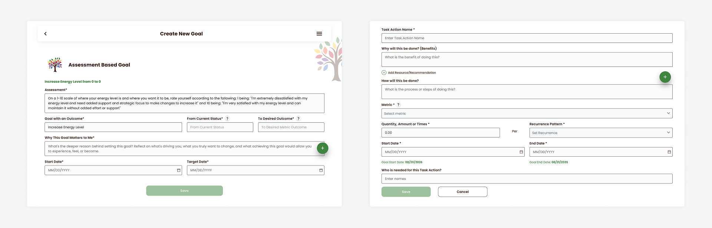
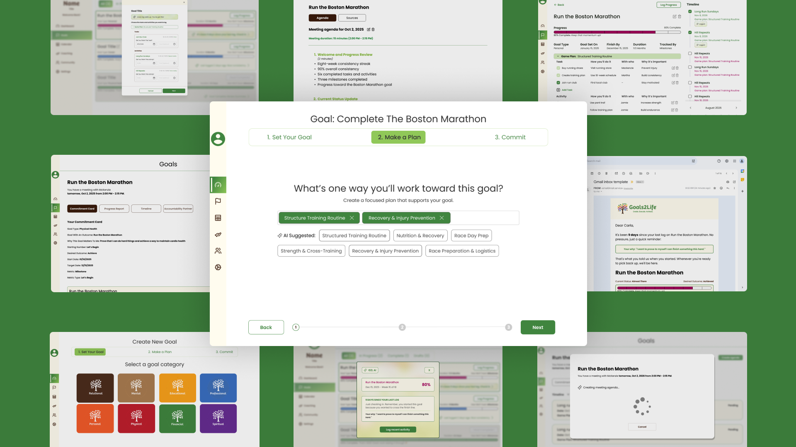
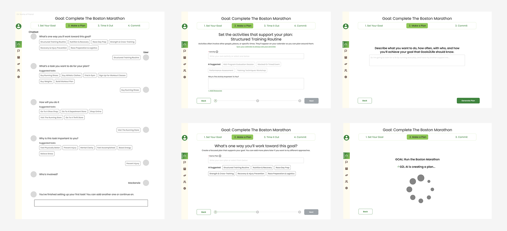
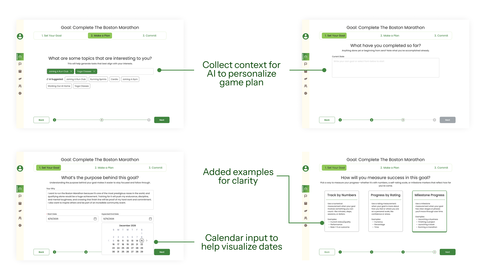
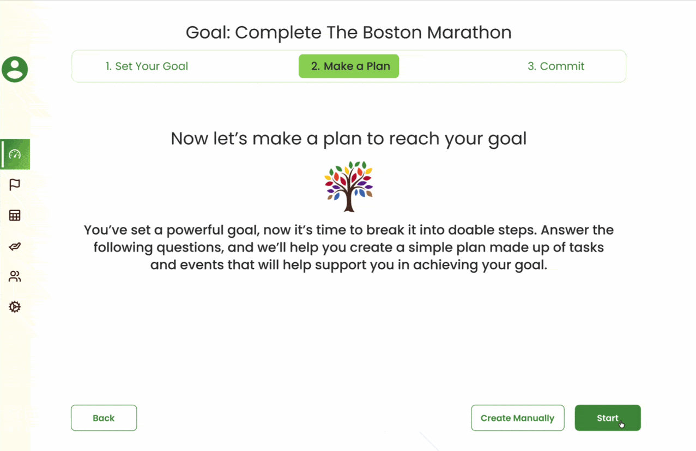
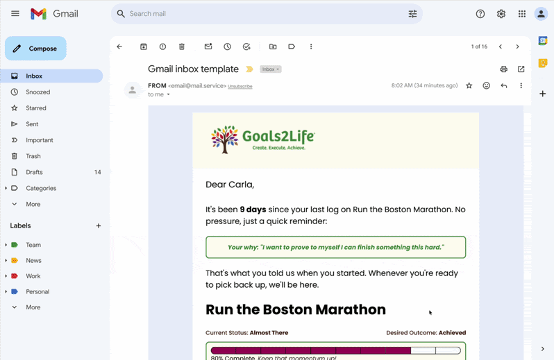
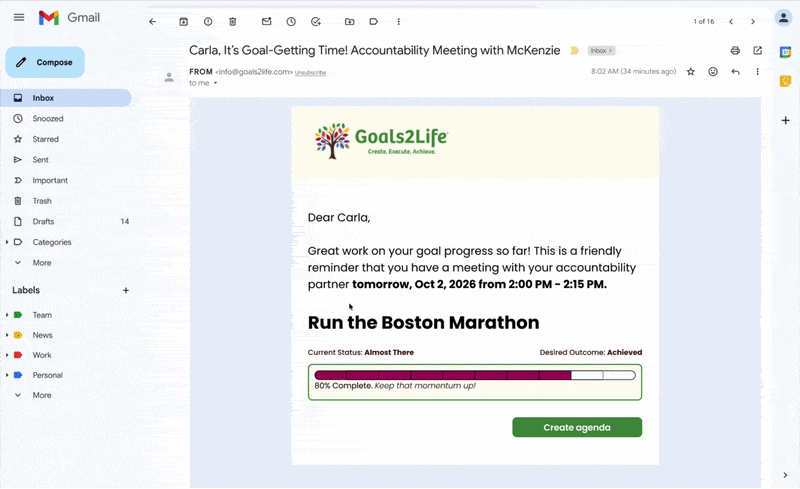

The before.
Goals2Life's current design had a light-weight AI




UX/UI Designer
Goals2Life is an online platform supporting working professionals in creating, executing, and achieving their goals through practical tasks to bridge the gap between intention and action.
User research, visual and interaction design, prototyping
6 months
Figma
Nathan Pereira, Avi Kompella, Danielle Corpuz
Goals2Life's current design had a light-weight AI

People struggle to stay consistent and reflective of their goals as human coaches are not always available. Goals2Life also fell behind competition and was set for an update. How might the AI coach meet users at moments of doubt and disengagement?
I redesigned the goal creation process to support users with their game plan for personal development, redirecting the roadmap before handing off to development.
I compiled research of AI and human coach perceptions to ground the design principles in behavioral science. Competitive analysis was conducted to understand and map similar products on the market currently. To identify areas of highest friction, functional flow analysis noted where support is most needed in the platform. Alongside this, I interviewed coaches and those who've been coached to collect qualitative evidence on their experiences and processes to translate into Goals2Life.
Users want relational, human accountability. AI cannot and should not be human.
AI steps in for structured and repeatable tasks when a human accountability partner isn’t present during the user’s struggles between sessions.
Users need to trust the AI to hold them accountable and return to attaining their goals.
Reflecting on the goals reconnect users to their intrinsic reasons for pursuing a goal.
The user interviews revealed motivation is lost between coaching sessions and people reported disinterest in AI replacing human coaches. Even with a coach, motivation declines between meeting sessions. On top of this, life circumstances can put a pause on user's goal attainment. We pivoted our design to be guided on the question of:
How might we design an AI layer to strengthen accountability and reflection in Goals2Life, so users stay on track with or without a partner?
We conducted an alignment workshop with the stakeholder to address any concerns about the project's direction early in the brainstorming process. A journey map was created for an aligned mental model of the user's experience to guide the team's design, and a flow map evaluated opportunities to add an AI layer. I started creating concepts of goal creation for primary use cases. Once aligned with the client, we began usability testing with the mockups to continually test the design's functionality and content.

Wireframe concepts
Validation testing revealed users felt the AI-generated game plan was generic because it wasn't asking about the user first. With more context and personalization, the AI can generate results tailored to the user, resulting in less manual input and editing later in the flow.
Seeing results
trusted the AI
said the AI 'felt native'
would use the AI




Requests from our client would come in for features that extended past the three scoped flows. While often reasonable from a product standpoint, the user research pointed towards a narrower set of flows, and taking on additional features may dilute the designs we validated with users. As a result, we balanced the client's wants by doucmenting her requests for future iterations as recommendations, while keeping our designs rooted to what our research supported.
Working with a solo founder is different than working with a detached stakeholder, as there's deep care about her product. Scope requests could come in at any time, which put pressure on the project timeline with sprint goals. We decided to consolidate discussion for new requests to a single weekly Friday check-in. Protecting the team's ability to finish scoped work meant designing the cadence of stakeholder communication alongside the product.